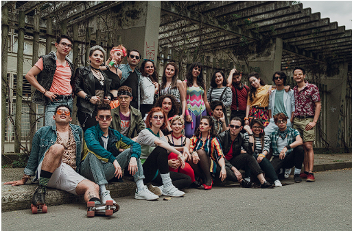
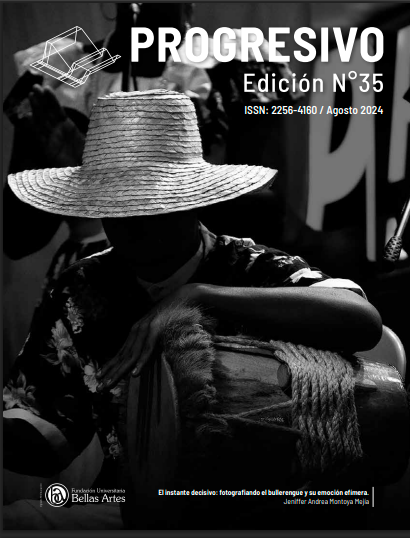
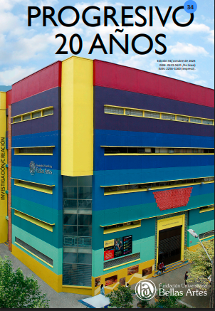
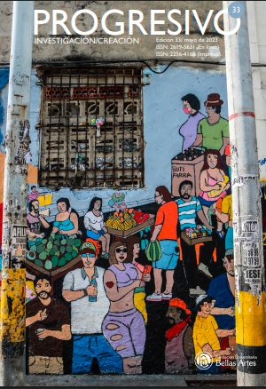
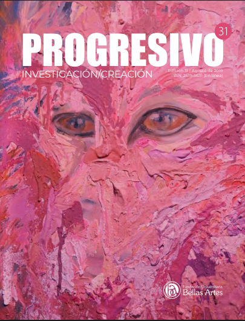
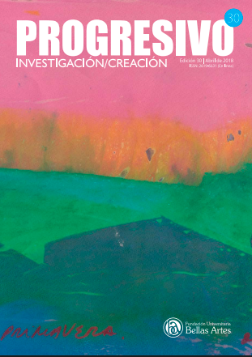
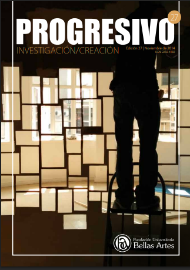
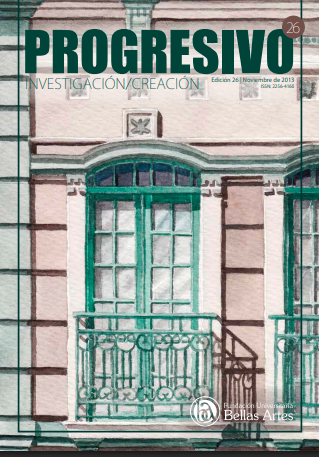
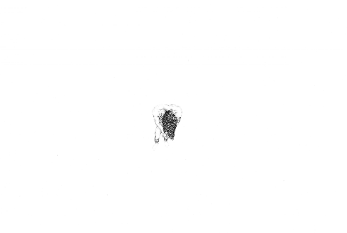
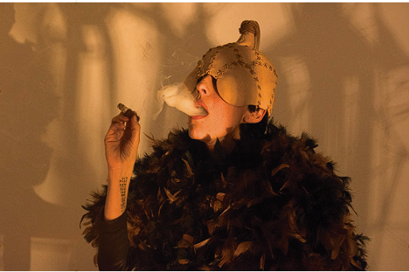

Ensamble Vocal Aguacero
La pregunta de cómo acercar a los espectadores al formato coral y la experiencia sonora del ensamble.
Explora todas nuestras ediciones anteriores

Junio 2025 ISSN: 2619-5631
Exploramos las nuevas tendencias del arte contemporáneo y su impacto en.

Agosto 2024 ISSN: 2256-4160
Expresiones que definen nuestra identidad universitaria.

Octubre 2023 ISSN: 2619-5631
Innovación educativa y nuevas metodologías en el aula universitaria.

Mayo 2023 ISSN: 2619-5631
Proyectos de investigación destacados de nuestros estudiantes y docentes.
Agosto 2020 ISSN: 2619-5631
Proyectos de investigación destacados de nuestros estudiantes y docentes.

Agosto 2019 ISSN: 2619-5631
Proyectos de investigación destacados de nuestros estudiantes y docentes.

Abril 2018 ISSN: 2619-5631
Proyectos de investigación destacados de nuestros estudiantes y docentes.

Noviembre 2014 ISSN: 2256-4160
Proyectos destacados de nuestra institución.

Noviembre 2013 ISSN: 2256-4160
Proyectos de investigación destacados de nuestros estudiantes y docentes.
Explora nuestra colección de investigaciones y publicaciones

La pregunta de cómo acercar a los espectadores al formato coral y la experiencia sonora del ensamble.

Exploración visual sobre espacios no ocupados y la percepción de la ausencia en la obra.
Análisis crítico de las construcciones sociales sobre la masculinidad a través de la fotografía.
Reflexiones sobre procesos creativos híbridos y cine de no ficción.
Sobre los intereses que estudia el libro Ombligo cimarrón y la gestión cultural.

Relaciones existentes entre cuerpo, vestido y performance como acto reflexivo.